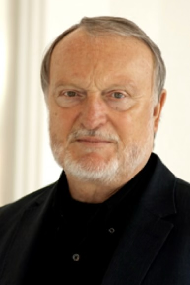

Die Leiter von Manfreds Labor an der UCSF und zu gleichen Teilen Nobelpreisträger 1989 für Medizin: J. Michael Bishop (links) und Harold Varmus (rechts).
1984-1987
Wenn man in den Aufzug des Moffitt Buildings einstieg, um ins Labor in der 12. Etage zu fahren, traf man dort gelegentlich Menschen, die Deutsch sprachen. Es gab eine größere Gruppe deutscher Postdoktoranden an der UCSF, die sich lose untereinander kannten. Ich war also nicht allein in San Francisco.
Da war zum Beispiel Bernhard Manger aus Erlangen, der im Labor von Art Weiss arbeitete. Weiss gehörte zu den Koryphäen der damals noch jungen Molekularen Immunologie. Mit Bernhard machte ich einige verrückte Experimente, die allerdings nichts Brauchbares ergaben. Er wurde später stellvertretender Direktor der Medizinischen Klinik mit Schwerpunkt Rheumatologie und Immunologie am Universitätsklinikum Erlangen.
Im Labor von Cho Hao Li traf ich Manfred Westphal, der über Endorphine forschte. Wir hatten mehrmals Kontakt und ich glaube, wir führten auch einige gemeinsame Experimente durch. Es kam nicht viel bei rum. Nach seiner Rückkehr nach Deutschland wurde Manfred Neurochirurg und später Ordinarius für Neurochirurgie am Universitätsklinikum Hamburg-Eppendorf. Und dann war da noch Manfred Schwab.

Manfred war Biologe. Er hatte wie ich in Gießen gearbeitet, allerdings auf einem ganz anderen Gebiet: der Tumorzytogenetik. Er war dort bereits sehr erfolgreich gewesen und hatte ein Stipendium für einen Forschungsaufenthalt in den USA erhalten. Als ich ihn kennenlernte, arbeitete er schon seit einiger Zeit im Labor von J. Michael Bishop. Bishop erforschte Tumorgene, die später als Onkogene weltbekannt werden sollten. Für diese Arbeiten sollte er einige Jahre später gemeinsam mit Harold Varmus den Nobelpreis für Medizin erhalten.
Ich lernte Manfred ganz unspektakulär im Aufzug kennen. Er lud mich zu einem Besuch in das Bishop-Labor ein. Es lag ebenfalls in einem der Hochhäuser des UCSF-Campus und bot einen spektakulären Blick über San Francisco. Ich erinnere mich noch gut daran, wie wir gemeinsam mit Bishop in dessen Büro saßen und uns beim Kaffee über Forschung, Deutschland und die deutschen Stipendiaten in Kalifornien unterhielten. Es war faszinierend, mit einem der Pioniere der modernen Krebsforschung ganz ungezwungen zu diskutieren.
Aber auch Manfred hatte es wissenschaftlich in sich. Zu jener Zeit war er einem Gen auf der Spur, das später die Behandlung krebskranker Kindern revolutionieren sollte. Und ohne dass ich es damals wusste, würde ich seine Entdeckung Jahrzehnte später bei der Behandlung der mir anvertrauten krebskranken Kinder nutzen. Das Gen ähnelte dem bereits bekannten MYC-Onkogen. Manfred fand es allerdings ausschließlich in Neuroblastomen, einer kindlichen Krebserkrankung. Deshalb nannte er es N-MYC. Gerade hatte er zeigen können, dass eine Vermehrung dieses Gens mit einem besonders aggressiven Krankheitsverlauf verbunden war. Heute gehört der Nachweis von N-MYC zu den wichtigsten Prognosefaktoren beim Neuroblastom. Sein Nachweis wird mittlerweile weltweit genutzt, um die Behandlung von Kindern mit Neuroblastom zu steuern.
Während meines Aufenthalts in San Francisco wurde mir zunehmend klar, dass ich die Forschung zwar liebte, innerlich aber immer Arzt werden wollte. Forschung machte mir Spaß und ich hatte äußerst attraktive Angebote aus der Biotech-Industrie. Aber letztlich wollte ich Patienten behandeln. Meine wissenschaftlichen Erkenntnisse sollten irgendwann kranken Menschen zugutekommen. Ich beschloss deshalb, Internist zu werden – mit Schwerpunkt Onkologie.
Gleichzeitig wusste ich, dass ich die Forschung nicht aufgeben wollte. Um beides miteinander verbinden zu können, brauchte ich eine Umgebung mit einer starken wissenschaftlichen Infrastruktur. Dafür kamen in Deutschland nur wenige Orte infrage. Heidelberg gehörte zweifellos dazu. Mit dem Deutschen Krebsforschungszentrum (DKFZ), dem Zentrum für Molekulare Biologie Heidelberg (ZMBH) und den European Molecular Biology Laboratories (EMBL) verfügte die Stadt über ideale Voraussetzungen.
Als ich Manfred von meinen Plänen erzählte, stellte sich heraus, dass auch er nach Deutschland zurückkehren wollte. Er hatte bereits ein Angebot als Professor und Leiter der neugegründeten Abteilung für Molekulare Zytogenetik am DKFZ erhalten.
Also schrieb ich eine Bewerbung an Prof. Hans-Georg Schettler, den großen Heidelberger Internisten. Was ich nicht wusste: Schettler war inzwischen aus dem aktiven Dienst ausgeschieden, und die Klinik wurde kommissarisch von Burkhard Kommerell geleitet. Eine Antwort erhielt ich nie. Vermutlich verstaubte meine Bewerbung irgendwo auf seinem Schreibtisch.
Als ich Manfred davon erzählte, meinte er ganz trocken: „Ich habe eine Stelle für einen Postdoktoranden. Komm doch erst einmal zu mir.“ Das erschien mir als vernünftige Lösung. So konnte ich nach Heidelberg gehen, weiter forschen und mich gleichzeitig vor Ort um eine internistische Ausbildungsstelle bemühen. Und so wurde ich im Sommer 1987 Mitglied von Manfreds Arbeitsgruppe am Deutschen Krebsforschungszentrum und arbeitete über N-MYC und das Neuroblastom. Der Weg nach Heidelberg begann also nicht mit einem Bewerbungsverfahren oder einem großen Plan.
Er begann in einem Aufzug in San Francisco.
Vorher wollten Hilde und ich allerdings noch einmal die Welt bereisen. Den Rückweg nach Deutschland machten wir über Tahiti, Neuseeland, Australien, Indonesien und Thailand. Aber davon später mehr.